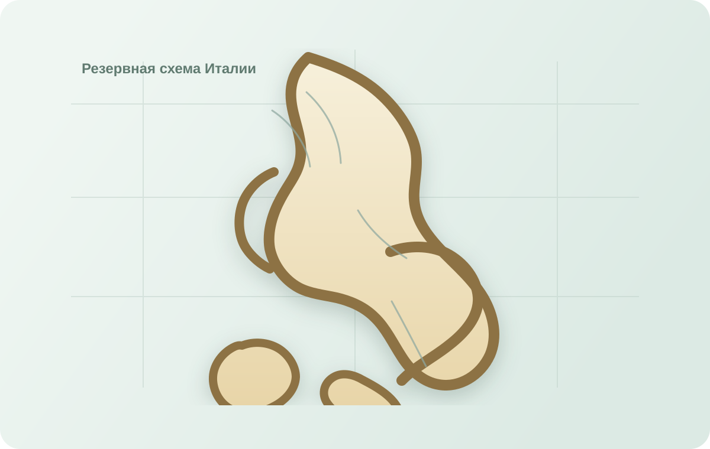

Карта (тест)
Резервная схема: если фон карты не загрузился, нажимайте на точки здесь.

Загадка города
Выберите город
Нажмите на точку карты, чтобы открыть вопрос.
Ключ
Команда: не выбрана
Резервная схема: если фон карты не загрузился, нажимайте на точки здесь.

Загадка города
Нажмите на точку карты, чтобы открыть вопрос.
Ключ
Выберите команду
Это нужно для синхронизации прогресса и триггеров по уликам.
Материалы команды
Основная карта команды отображается прямо в этом разделе.
Загружаем карту...
Новая карта
Отдельная вкладка с новым прототипом карты для просмотра и проверки.